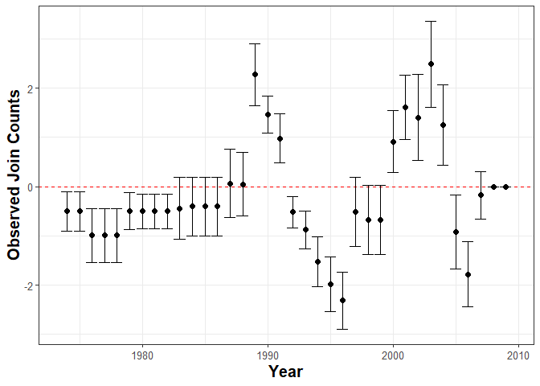
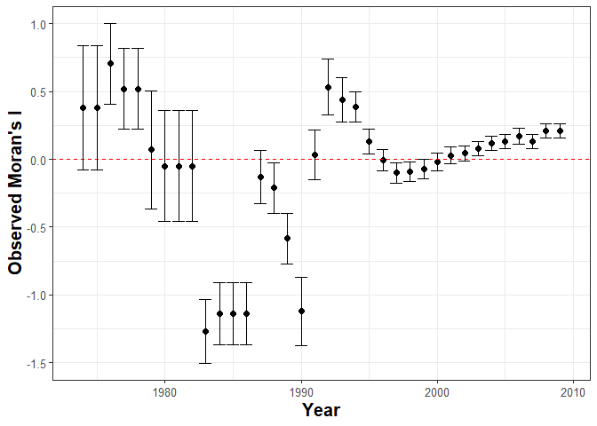
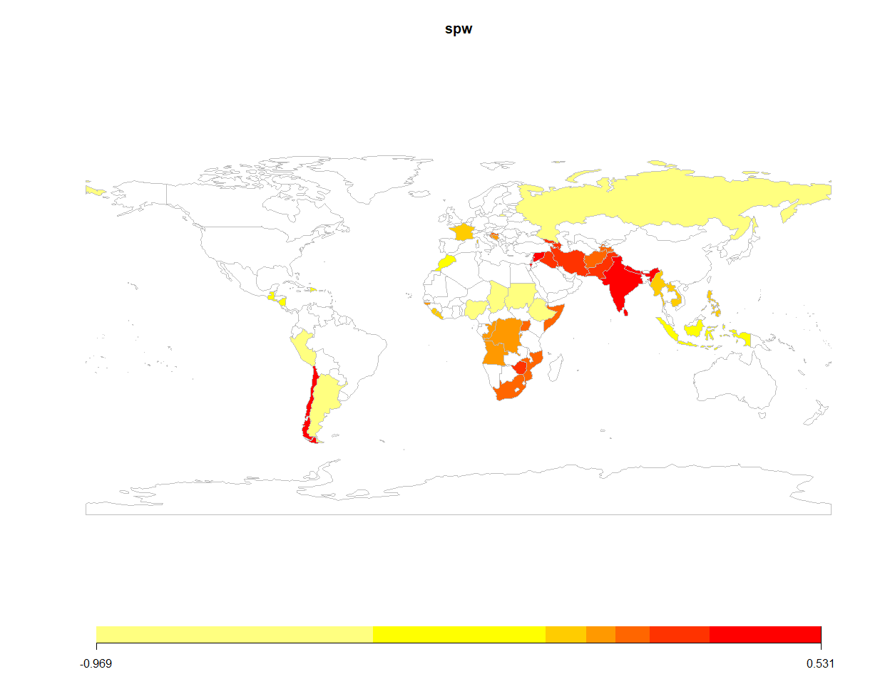
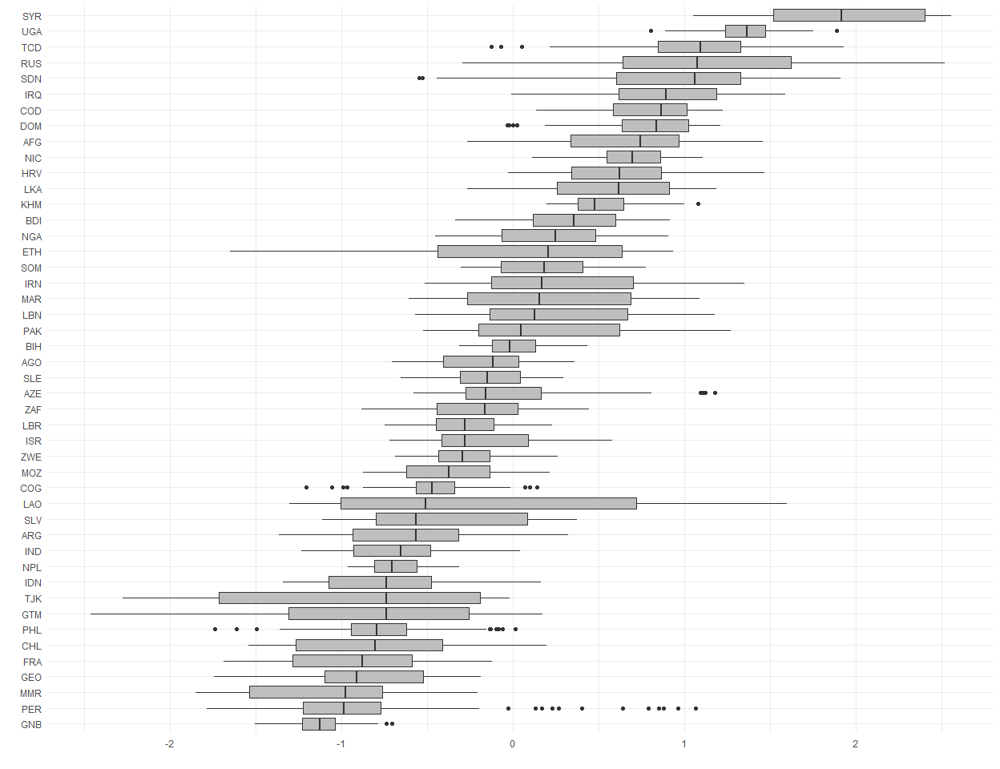

BayesSPsurv is an R package that provides functions to fit and assess the performance of the following sets of Bayesian Spatial split-population (SP) survival (cure) models:
Fit the Bayesian Spatial split-population survival model that accounts for both structural and spatial heterogeneity. Spatial autocorrelation is modeled with spatially weighted frailties, which are estimated using a CAR prior.
Fit a non-spatial Bayesian SP survival model with exchangeable frailties in the split and survival-stage equations.
Fit a non-spatial parametric SP survival model with no frailties.
BayesSPsurv uses an MCMC algorithm for Bayesian inference (Gibbs sampling and Metropolis-Hastings) to estimate the models listed above.
Why BayesSPsurv?
Scholars across multiple academic disciplines often analyze time-to-event data via conventional survival models. While useful, these models rely on two core assumptions that are not always tenable:
Not all units may experience the event of interest.
Observations may not be independent from each other after controlling for covariates.
BayesSPsurv allows users to estimate Bayesian Spatial split-population (SP) survival (cure) models with spatial frailties in both the split and survival stages. This accounts for spatial clustering in the “at risk” and “immune” populations. Users can also incorporate time-varying covariates. It also includes functions and code for pre-estimation autocorrelation diagnostics, creation of spatial weight matrix based on units and adjacencies of interest, and visualization of results, making BayesSPsurv flexible and broadly applicable to a variety of research areas.
Functions in the BayesSPsurv Package
| Function | Description |
|---|---|
spatialSPsurv |
Markov Chain Monte Carlo (MCMC) to run time-varying Bayesian split population survival model with spatial frailties. |
exchangeSPsurv |
Markov Chain Monte Carlo (MCMC) to run Bayesian split population survival model with exchangeable frailties. |
pooledSPsurv |
Markov Chain Monte Carlo (MCMC) to run Bayesian split population survival model with no frailties. |
plot_JoinCount |
Conducts Join Count tests to assess spatial clustering or dispersion of categorical variables in the data. |
plot_Moran.I |
Implements Global Moran I test to evaluate spatial autocorrelation in units’ risk propensity in the data. |
summary |
Returns a summary of exchangeSPsurv, pooledSPsurv or spatialSPsurv object via coda::summary.mcmc. |
spatial_SA |
Generates a spatial weights matrix with units and adjacencies defined by the user. |
SPstats |
A function to calculate the deviance information criterion (DIC) and Log-likelihood for fitted model oupUts. |
Installation
The latest version of the package (0.1.3) is available on CRAN R:
install.packages("BayesSPsurv")To install the development version from GitHub:
if (!require("remotes")) install.packages("remotes")
remotes::install_github("Nicolas-Schmidt/BayesSPsurv")Using the Package
We illustrate the functionality of BayesSPsurv using data from Walter (2015)’s study on post-civil war peace duration. The data is included and described in the manual’s package.
Bayesian Spatial Split-Population (SP) Survival Model
spatialSPsurv estimates the Bayesian Spatial split-population survival (cure) model. It includes time-varying covariates and spatially autocorrelated frailties in the model’s split and survival stage. To allow for easy replication, the example below runs a low number of iterations (N).
spatialSPsurv Weibull model with N = 15,000 is here.
spatialSPsurv Log-Logistic model with N = 15,000 is here.
First, load the package.
Second, we add variables that allow us to capture the survival characteristics of the data.
walter <- spduration::add_duration(Walter_2015_JCR,"renewed_war",
unitID = "id", tID = "year",
freq = "year", ongoing = FALSE)
#> Registered S3 method overwritten by 'quantmod':
#> method from
#> as.zoo.data.frame zoo
#> Warning in attempt_date(data[, tID], freq): Converting to 'Date' class with
#> yyyy-06-30The spatial_SA function allows users can create the spatial weights matrix as follows. Please note that users can specify their own distance threshold. In this example, we define “proximity” as having capitals that are within 800 kms.of each other.
walter <- BayesSPsurv::spatial_SA(data = walter, var_ccode = "ccode", threshold = 800L)BayesSPsurv contains two functions that allow one to assess the presence of spatial autocorrelation in the data: plot_JoinCount and plot_Moran.I.
par(mar = c(4, 4, .1, .1))
plot_JoinCount(data = walter[[1]], var_cured = "cured", var_id = "ccode",var_time = "year", n = 12)
plot_Moran.I(data = walter[[1]], var_duration = "duration", var_id = "ccode",var_time = "year", n = 12)
The plots above indicate that unobserved heterogeneous risk factors factors that trascend borders may lead to spatial autocorrelation in both the consolidation and duration of post-war peace. This suggests that a Spatial SP survival model is an appropriate method of analysis.
So, we now estimate the Bayesian Spatial split-population survival model using the function spatialSPsurv.
set.seed(123456)
model <- spatialSPsurv(
duration = duration ~ victory + comprehensive + lgdpl + unpko,
immune = atrisk ~ lgdpl,
Y0 = 't.0',
LY = 'lastyear',
S = 'sp_id' ,
data = walter[[1]],
N = 1500,
burn = 300,
thin = 15,
w = c(1,1,1),
m = 10,
form = "Weibull",
prop.varV = 1e-05,
prop.varW = 1e-03,
A = walter[[2]]
)The generic print() function displays the results.
print(model)
#> Call:
#> spatialSPsurv(duration = duration ~ victory + comprehensive +
#> lgdpl + unpko, immune = atrisk ~ lgdpl, Y0 = "t.0", LY = "lastyear",
#> S = "sp_id", A = walter[[2]], data = walter[[1]], N = 1500,
#> burn = 300, thin = 15, w = c(1, 1, 1), m = 10, form = "Weibull",
#> prop.varV = 1e-05, prop.varW = 0.001)
#>
#>
#> Iterations = 1:80
#> Thinning interval = 1
#> Number of chains = 1
#> Sample size per chain = 80
#>
#> Empirical mean and standard deviation for each variable,
#> plus standard error of the mean:
#>
#>
#> Duration equation:
#> Mean SD Naive SE Time-series SE
#> (Intercept) 0.5472465 0.7770281 0.08687438 0.03375775
#> victory 0.1083226 0.5791961 0.06475609 0.09381673
#> comprehensive 0.2390011 0.5841345 0.06530822 0.06530822
#> lgdpl 0.4221808 0.1185057 0.01324934 0.02161274
#> unpko 0.1617510 0.7679051 0.08585440 0.08585440
#>
#> Immune equation:
#> Mean SD Naive SE Time-series SE
#> (Intercept) -0.383487 3.797043 0.4245223 0.5575999
#> lgdpl -1.461369 1.757769 0.1965245 0.2475315SPstats()calculates the Deviance Information Criterion (DIC) and Log-Likelihood (LL) statistics for the estimated model.
SPstats(model)
#> $DIC
#> [1] -4783.756
#>
#> $Loglik
#> [1] 3556.558The following lines of code allow users to substantively interpret the spatial frailties. They generate a map that helps to determine whether adjacent units share similar frailty values. Please note that the map below only illustrates survival-stage (W) frailties. Substituting W for V in the code below generates a map for the split-stage frailties.
bsps_map(data = model$W, mapTitle = "spw")
#> 46 codes from your data successfully matched countries in the map
#> 0 codes from your data failed to match with a country code in the map
#> 197 codes from the map weren't represented in your data
Bayesian Exchangeable Split-Population (SP) Survival Model
The function exchangeSPsurv fits a model that incorporates nonspatial unit-specific i.i.d frailties in the model’s split-stage (Vi) and survival stage (Wi) as well as time-varying covariates in each of these two stages.
exchangeSPsurv Weibull model with N = 15,000 is here.
exchangeSPsurv Log-Logistic model with N = 15,000 is here.
walter <- spduration::add_duration(Walter_2015_JCR,"renewed_war",
unitID = "id", tID = "year",
freq = "year", ongoing = FALSE)Since estimating the Exchangeable model does not require a spatial-weights matrix (A), users can type the following lines of code to prepare the data.
walter$S <- rep(x = 1:length(unique(walter$ccode)), times = rle(walter$ccode)$lengths)
country <- countrycode::countrycode(unique(walter$ccode),'gwn','iso3c')The model is estimated as follows.
set.seed(123456)
model <- exchangeSPsurv(
duration = duration ~ comprehensive + victory + unpko,
immune = atrisk ~ lgdpl,
Y0 = 't.0',
LY = 'lastyear',
S = 'S' ,
data = walter,
N = 1500,
burn = 300,
thin = 15,
w = c(1,1,1),
m = 10,
form = "Weibull",
prop.varV = 1e-05,
prop.varW = 1e-03,
id_WV = country
)You can generate the box-plots for unit-specific split and survival-stage frailties from the estimated model.
library(ggplot2)
w_country <- tidyr::pivot_longer(as.data.frame(model$W), cols = 1:ncol(model$W))
ggplot(w_country, aes(x = reorder(factor(name), value, FUN = median), y = value)) +
geom_boxplot(fill = 'gray') + coord_flip() + theme_minimal() + labs(x = "", y = "")
Bayesian Pooled Split-Population (SP) Survival Model
BayesSPsurv also fits Bayesian SP survival models without unit-specific i.i.d. frailties via pooledSPsurv.
pooledSPsurv Weibull model with N = 15,000 is here.
pooledSPsurv Log-Logistic model with N = 15,000 is here.
set.seed(123456)
model <-pooledSPsurv(
duration = duration ~ comprehensive + victory + unpko,
immune = atrisk ~ lgdpl,
Y0 = 't.0',
LY = 'lastyear',
data = walter,
N = 1500,
burn = 300,
thin = 15,
w = c(1,1,1),
m = 10,
form = "Weibull"
)The generic print() function displays the results.
print(model)
#> Call:
#> pooledSPsurv(duration = duration ~ comprehensive + victory +
#> unpko, immune = atrisk ~ lgdpl, Y0 = "t.0", LY = "lastyear",
#> data = walter, N = 1500, burn = 300, thin = 15, w = c(1,
#> 1, 1), m = 10, form = "Weibull")
#>
#>
#> Iterations = 1:80
#> Thinning interval = 1
#> Number of chains = 1
#> Sample size per chain = 80
#>
#> Empirical mean and standard deviation for each variable,
#> plus standard error of the mean:
#>
#>
#> Duration equation:
#> Mean SD Naive SE Time-series SE
#> (Intercept) 3.19047012 1.1807620 0.13201321 0.45104567
#> comprehensive 0.30823578 0.7420113 0.08295939 0.08295939
#> victory 0.05918528 0.5611721 0.06274094 0.06274094
#> unpko 0.10013585 0.8112391 0.09069929 0.09069929
#>
#> Immune equation:
#> Mean SD Naive SE Time-series SE
#> (Intercept) -2.595263 6.259883 0.6998762 1.530030
#> lgdpl -1.782770 3.348600 0.3743848 1.116384Parallel MCMC: Assesing Convergence of Multiple Chains
The following lines of code allow users to assess the convergence of multiple chains via the Gelman-Rubin diagnostic, which compares the variances within each chain to the variances between each chain Gelman and Rubin (1992).
library(doParallel)
library(snow)
library(doRNG)
library(coda)
workers <- makeCluster(detectCores() - 1 ,type = "SOCK", outfile = "log.txt")
registerDoParallel(workers)
inivals <- c(0, 1, 10, 50)
data(Walter_2015_JCR)
walter <- spduration::add_duration(Walter_2015_JCR,"renewed_war", unitID = "id",
tID = "year", freq = "year", ongoing = FALSE)
walter <- spatial_SA(data = walter, var_ccode = "ccode", threshold = 800L)
set.seed(123456)
ctype = rbind
t = 1
tm1 = system.time({
Out <- foreach(i = 1:length(inivals),.combine = ctype, .errorhandling = 'stop',
.packages='BayesSPsurv',
.options.RNG = t) %dorng%
{spatialSPsurv(
duration = duration ~ victory + comprehensive + lgdpl + unpko,
immune = atrisk ~ lgdpl,
Y0 = 't.0',
LY = 'lastyear',
S = 'sp_id' ,
data = walter[[1]],
N = 1500,
burn = 300,
thin = 15,
w = c(1,1,1),
m = 10,
ini.beta = inivals[i],
ini.gamma = inivals[i],
ini.W = inivals[i],
ini.V = inivals[i],
form = "Weibull",
prop.varV = 1e-05,
prop.varW = 1e-03,
A = walter[[2]])
}
})
betas <- do.call("rbind", lapply(Out[1:4], function(x) as.mcmc.list(as.mcmc(x))))
gammas <- do.call("rbind", lapply(Out[5:8], function(x) as.mcmc.list(as.mcmc(x))))
## Gelman Diagnostics
coda::gelman.diag(betas)
#> Potential scale reduction factors:
#>
#> Point est. Upper C.I.
#> (Intercept) 1.16 1.45
#> victory 1.21 1.51
#> comprehensive 1.21 1.29
#> lgdpl 1.27 1.60
#> unpko 1.15 1.19
#>
#> Multivariate psrf
#>
#> 1.07
coda::gelman.diag(gammas)
#> Potential scale reduction factors:
#>
#> Point est. Upper C.I.
#> (Intercept) 1.25 1.74
#> lgdpl 1.12 1.39
#>
#> Multivariate psrf
#>
#> 1.23